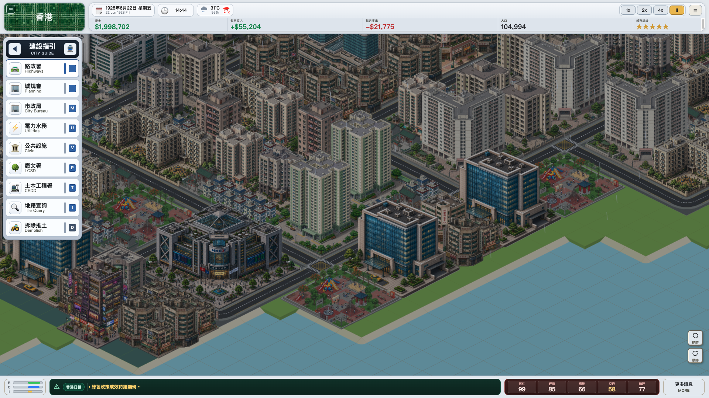
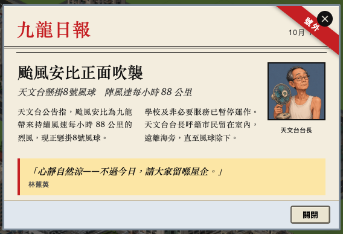
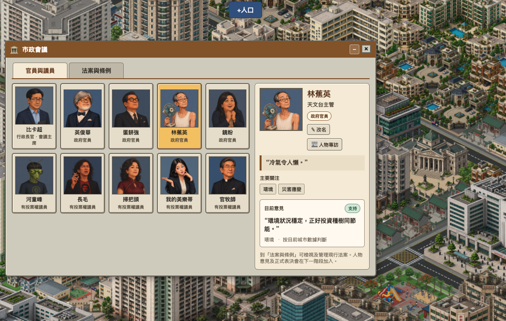
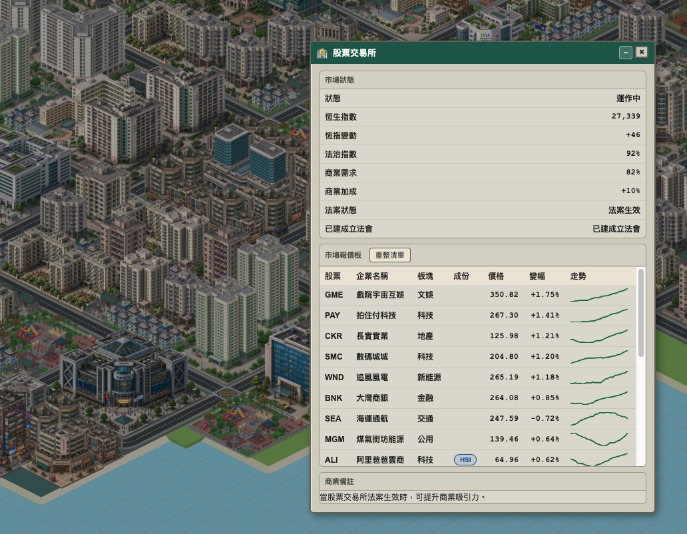
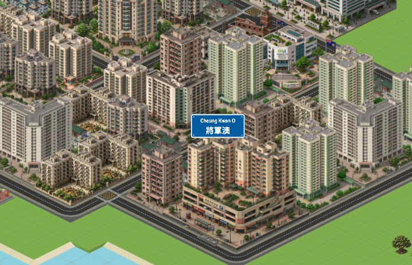
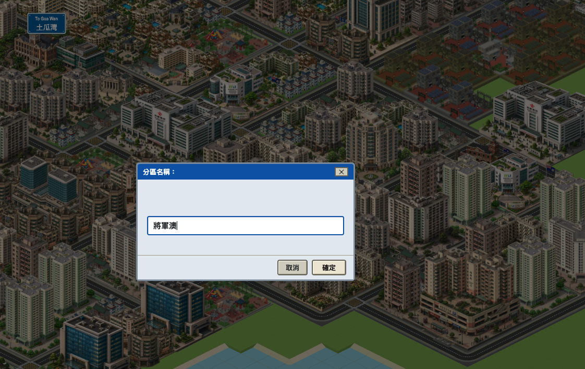
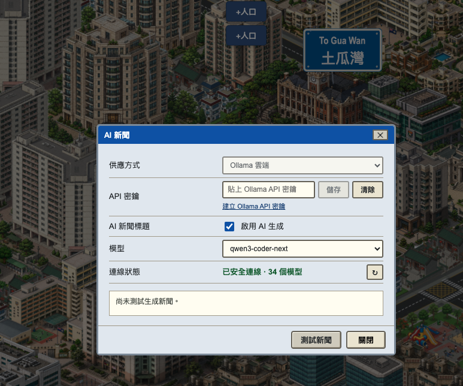

macOS
Mac Apple Silicon
適合 M1、M2、M3、M4 或更新的 Mac。下載 DMG 後拖入「應用程式」即可安裝。
下載 ARM64 DMG
下載數載入中
Screenshots







最新版本
v3.3.0
2026年7月19日發布
最新版本下載
載入中
全部版本下載
載入中
入口瀏覽

Downloads
適合 M1、M2、M3、M4 或更新的 Mac。下載 DMG 後拖入「應用程式」即可安裝。
適合 Intel CPU 的 Mac。下載 DMG 後拖入「應用程式」即可安裝。
推薦大部分玩家使用。安裝後會加入一般應用程式捷徑。
不用安裝，下載後直接執行。適合快速試玩或分享給朋友。
AI 新聞屬選用功能。安裝後請在「設定 → AI 新聞」貼上你自己嘅 Ollama API key；遊戲及安裝檔不包含任何開發者密鑰。未設定 AI 亦可照常使用模擬新聞。現時安裝檔尚未完成簽章，macOS Gatekeeper 或 Windows SmartScreen 可能會在第一次開啟時要求確認。
User Manual
除資金、空地及 footprint 外，以下建築需要額外城市條件。首次達標時，遊戲走馬燈及香城討論區會發出一次解鎖通知。
| 建築 | 解鎖條件 | 上限／選單行為 |
|---|---|---|
| 社區廟宇 | 人口 3,000 | 最多 4 座 |
| 教堂 | 人口 5,000 | 最多 2 座 |
| 立法會 | 人口 10,000 | 最多 1 座；達標後才出現 |
| 大佛 | 人口 12,000 | 最多 1 座 |
| 大型廟宇 | 人口 12,000；吸引力 35 | 最多 1 座 |
| 太空館 | 人口 15,000；「科研發展法」生效 | 最多 1 座 |
| 貨櫃碼頭 | 人口 15,000；4×4 footprint 貼住連續四格水邊，或沙灘後方緊接海水 | 不限數量 |
| 文化中心 | 人口 20,000 | 最多 1 座 |
| 會展中心／紅磡體育館 | 人口 30,000 | 各最多 1 座 |
| 海洋公園 | 立法會；人口 35,000；月收入 $6,000；月盈餘 $1,000；經濟 50；支付 $10,000 提案並獲批 | 批准前隱藏；8×8；建造費 $22,000 |
| 城超聯主場 | 人口 40,000 | 最多 1 座 |
| 股票交易所 | 立法會；人口 50,000；「股票交易所法案」生效 | 最多 1 座；達標後才出現 |
| 美利樓 | 城市吸引力 60 | 最多 1 座 |
| 玫瑰園國際機場 | 立法會；人口 80,000；月收入 $12,000；月盈餘 $2,000；經濟 65；支付 $25,000 提案並獲批 | 批准前隱藏；12×12；建造費 $150,000 |
Release Notes
UI/news/*.webp 圖片，彈窗顯示前亦會統一路徑，修正 DMG 與 EXE 版圖片失效。Models/PNG/buildingTiles_*.png 模型嘅載入要求，以及相關未再使用嘅舊放置與目錄程式，避免 console 不斷出現 404。latest.yml 與 setup blockmap。劃設住宅、商業與工業區，興建道路、公園、公共設施與發電廠。放置雙語路牌建立分區，觀察地區交通、醫療、教育與污染，再由 AI 或模擬新聞報道城市變化。